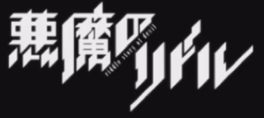

原作：高河弓
地区：日本
连载期间：2012年9月-2016年11月
出版社：角川书店
←浏览漫画请按左边
只有在特别时期才会开课的班级──明星学园十年黑班。 为了暗杀平凡女高中生一之濑晴，十二名女高中生暗杀者齐聚一堂。 东兔角也是被派出的刺客之一，但她却渐渐被晴吸引。“要杀了她，自己活着呢？ 还是要让她活下去，自己去死？或者是，要挑战让她和自己都能活下去？” 兔角选择的答案是？还有，为何有人要晴的命──？
只有在特别时期才会开课的班级──明星学园十年黑班。 为了暗杀平凡女高中生一之濑晴，十二名女高中生暗杀者齐聚一堂。 东兔角也是被派出的刺客之一，但她却渐渐被晴吸引。“要杀了她，自己活着呢？ 还是要让她活下去，自己去死？或者是，要挑战让她和自己都能活下去？” 兔角选择的答案是？还有，为何有人要晴的命──？
涩谷崩坏之后的一年，秋叶原RAJIO会馆的大厦楼顶上坠落了 人工卫星的新闻闹得沸沸扬扬。 以秋叶原为据点的三人发明小组“未来发明研究所”队长， 改不了中二病的大学生冈部伦太郎和他的伙伴们终日重复着 古怪发明的开发。2010年7月28日，冈部为了取得学分和同 级的好友桥田至一同去了讲义会场，在那里，他们遇见了年 仅18岁就成功在美国科学杂志刊登论文的天才少女牧濑红莉栖。 然而古怪的是，冈部在几个小时前刚刚目睹了在RAJIO会馆8楼晕 倒在血泊中的牧濑。更让人费解的是，这一切在一周前发送给桥田 的手机短信中都记载的清清楚楚。
名字：命运石之门
制作人：松原达野
主要内容妄想科学
剧场版《空之境界》改编自TYPE-MOON旗下作家奈须蘑菇的同名长篇小说。 《空之境界》是著名作家、脚本家奈须蘑菇在1998年到1999年写作连载的轻小说 ，插画由好友武内崇负责。那时的奈须与武内崇组成同人团体“竹帚”，后来随着 TYPE-MOON的成立，著名作品《月姬》以及《Fate/stay night》引起巨大反响。 以这些为契机，《空之境界》推出了剧场版系列。由于原作的出色以及ufotable的 高水准制作，本作获得了空前的成功，创造了主映影院Tiatoru系单馆动画作品历代 票房记录第一名 ，前7章DVD累积销售数75万张的记录。作品以拥有直死之眼的 两仪式与普通青年黑桐干也为中心，描绘了从两人高中邂逅开始的种种故事，在月 世界的灰暗基调下，这残忍却又温馨的物语震撼了许多观众的心灵